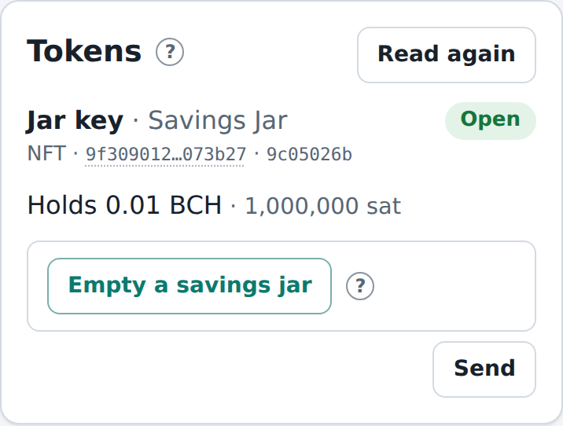

Mockup play coins
A chain of this site's own, for a first look.
- Coins
- At the press of a button
- A recovery
- A couple of minutes: a button moves the chain's clock past the waiting period
BCH Blaze 2026 · on a mockup chain, chipnet and mainnet
No seed phrase to write down. Someone you trust, your bank or a person you know, can move the wallet to a new phone. They can only do it in the open, on chain, and after a waiting period in which the old phone can say no.
Coins, tokens and positions in applications come along: a savings jar and a ParyonUSD loan survive the move.
Try it with play coins on a mockup chain, with test coins on chipnet, or on mainnet.
The wallet and the recoverer ask where you want to try them. The pages, the contracts and the steps are the same on all three; what you bring and how long a recovery takes are not.
A chain of this site's own, for a first look.
Bitcoin Cash's public test network.
Enabled only to meet the requirements of BCH Blaze. Nothing here has been audited, coins can be lost, and we do not recommend it.
Each link opens in a new tab, so this page stays open as your guide. Ctrl-click (⌘-click on a Mac) or a middle click opens it behind this one.
The owner's wallet. Balance, send, receive, connected applications, and a recovery alarm that refuses a request it did not expect.
Scan with your phone's camera, or type
wallet.9500.cash
The page of a bank, or of a friend or family member. It sets up wallets from its own coins, keeps each wallet's recovery kit, and moves a wallet to a new phone when the owner asks.
Open recovererSavings locked until a date. The jar's key is a token in your wallet; whoever holds it can empty the jar after the date. The same contract works with any wallet.
Open Savings JarBorrow PUSD against BCH with Paryon's public contracts, unchanged, on their test deployment. The loan's key is a token in your wallet.
An independent front end made for this demonstration. It is not Paryon's site and is not affiliated with or endorsed by Paryon.
Open loan pageThe wallet is made for a phone; the other pages are made for a desktop. The pages talk to each other through QR codes and an encrypted relay, so they work across devices.
The wallet. It scans the codes the desktop pages show.
The recoverer, the Savings Jar and the loan page, side by side in tabs.
For trying a recovery: the wallet in another browser on the desktop, or in a private window. Instead of scanning, it can paste the code as text.
Each browser, and each private window, keeps a wallet of its own. Closing a private window erases the wallet in it, which is a quick way to "lose a phone": your recoverer can bring that wallet back.
On the mockup the whole course takes a few minutes: nothing has to be brought and nothing has to be waited for. On chipnet it takes about half an hour, half of it the waiting period, so start the recovery (step 5) early and try the applications while it runs. On mainnet the waiting period is a day.
Open the recoverer on your desktop. It asks where you want to try it, then whether you are helping someone I know
or a bank
, which sets up wallets without approving each one. The recoverer pays for every wallet it sets up, so its last step asks for coins, and the page offers nothing else until they have arrived.
Get 2 BCH of play coins.
Every wallet starts with a small balance from the recoverer. Raise it under Settings
if you like. The wallet asks the same first question: choose the same network there.
On the recoverer, open Set up
to show a code. On your phone, open the wallet, tap Someone I trust is setting it up
and scan the code. Approve on the recoverer. The wallet is ready the moment the network has the transaction that creates it; there is no wait for a block, on any network.
Open the Savings Jar and scan its code from the wallet's Apps
tab. Open a jar that opens in ten minutes. The wallet shows what the transaction does before you approve it, keeps the jar's template and a record of the jar in your backup before it signs, and the jar's key arrives in the wallet as a token.
The loan page pairs the same way. A loan of 100 PUSD needs collateral in the wallet first: the page says how much before anything is asked of the wallet.
Get 2 BCH of play coinson the wallet's
Receivescreen covers the loan, and
Let time pass until the jar openson the jar's page opens the jar at once. Both pages change to the mockup by themselves when the wallet connects.
Receiveaddress for the loan. The jar opens a few minutes after its date.
Close the Savings Jar's tab. In the wallet, Apps
lists the jar's key under Tokens
, with what the jar holds and a button: Empty a savings jar
. Press it once the jar's date has passed. The wallet shows what the transaction does and carries it out by itself.
Nothing in the wallet was written for the jar. The jar's XO template describes the action, and this action needs nothing that only the application has: it spends no coin of the application's, and every value it takes is in the record the wallet stored when the jar was opened. Every action of every template that meets this shows up as a button, automatically.
An action that does need the application is listed too, with Open the application to do this
and the reason behind a ?
. Closing a ParyonUSD loan is one: it spends Paryon's price coin, which only the loan page can name.
Let time pass until the jar openson the jar's page before you close it.

Appsscreen with a jar open. The button comes from the jar's template.
Close the wallet on your phone. Then open the wallet in a private window, or another browser, on the desktop: this is the new phone. Tap I lost my phone
.
On the recoverer, open the wallet under People
and press name lost their phone
. Paste the code's text into the new wallet (or scan it). The recoverer then asks the network to move the wallet to the new key, and the waiting period starts. The recoverer shows how long is left; the new wallet waits.
Let the waiting period passon the recoverer when you have seen enough of the wait. It moves the chain's clock on, for everyone on the mockup.
Close the old wallet first. While it is open, it refuses any request by itself. That is the protection working, and it is step 6.
Leave the old wallet open and make a request: the wallet refuses it on chain, at once, on every network, and the recoverer's page says that the owner's phone refused the request. Under Recovery
you can turn off Refuse requests without asking
to decide yourself.
When the waiting period is over, press Complete the move
on the recoverer. The new wallet takes the hand-over and moves every coin and token to addresses of its own: your balance, the jar's key, the loan's key. Under Apps
, trust the templates the old phone stored in the backup: the jar is listed again from the old phone's record, checked against the chain, and the new wallet empties it by itself. For the loan, the wallet names the loan page: open it on the new phone, and it finds the loan from its key and closes it.
Open the old wallet again: it says that the wallet now belongs to another key.
The waiting period is the owner's protection: the recoverer can ask to move a wallet without proving anything, and the old phone has this long to say no. The steps are the same on every network; how long they take is not. The shortest waiting period the network can measure is 512 seconds, about 9 minutes, and the recoverer offers it on every network. With it a move can complete seconds after a press on the mockup, about 15 minutes after the request on chipnet, and about 30 minutes after it on mainnet. For real use the recoverer starts mainnet wallets with about 24 hours.
Mockup A block when a transaction arrives · the shortest waiting period, skipped at a press
Chipnet A block about every minute · the shortest waiting period
Mainnet A block about every ten minutes · the shortest waiting period
Thirty minutes is the usual case, not a promise. The wait starts only when a block holds the request, and the chain's clock moves only when blocks come. When blocks are slow, a move with the shortest waiting period can take a few hours. For real use the recoverer starts mainnet wallets with 169 × 512 seconds, about 24 hours, and the move then completes about a day after the request; the shortest is chosen under Settings
.
The network measures the wait itself, in steps of 512 seconds. One step, about 9 minutes, is the shortest wait that exists. Nobody can shorten a wallet's waiting period, not even the recoverer.
The wait is measured by the chain, which no one can bend, not by a clock someone claims. A request that is not in a block has no age yet. This is one of the very few waits for a block in the wallet; everything else works without one.
Nodes compare against the middle time of the last eleven blocks. It moves only when a block comes, and trails the real time by a few minutes on chipnet and by about an hour on mainnet. A waiting period starts and ends by this clock, so on chipnet the nine minutes come to about 15 from the request: a block has to hold the request first, and the clock has to pass the end, which it does a few blocks after the real time has. A jar's date is compared with the clock directly, so a jar opens that much after its date. On the mockup the clock also moves when someone presses a button, for everyone there, and can be ahead of the real time.
Nine minutes is for trying it out, on every network. On mainnet the recoverer sets up wallets with about 24 hours unless you choose otherwise, and also offers about an hour or about a week. The longer the wait, the longer a phone can be off and still notice a request in time.